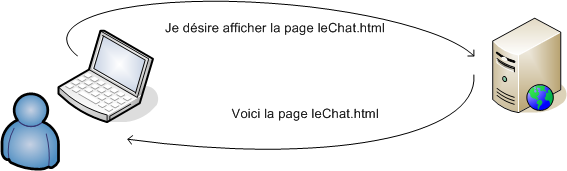
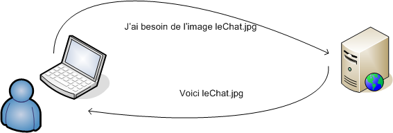

Introduction
La première partie de ce chapitre présente la manière dont les images sont gérées par le HTTP et les navigateurs. La deuxième partie détaille les différents formats d'images : JPEG, GIF et PNG.
La première partie de ce chapitre présente la manière dont les images sont gérées par le HTTP et les navigateurs. La deuxième partie détaille les différents formats d'images : JPEG, GIF et PNG.
L'une des caractéristiques les plus intéressantes du HTML est la possibilité d'inclure des images dans une page, soit en tant qu'élément en-ligne, soit en tant qu'élément à part (téléchargé via un lien), ou en tant qu'arrière-plan de la page. On peut également insérer des images dans les listes en remplacement des puces ou encore dans les liens. Insérées judicieusement dans le contenu, les images rendent les pages HTML plus attractives. Elles enrichissent l'information et facilitent la lecture.
Attention, placer trop d'images dans un texte assomme parfois le lecteur et l'empêche de se concentrer sur l'essentiel, n'est-ce pas Astérix?
L'élément img permet l'insertion d'une image dans une page HTML. Pour insérer une image dans une page HTML, il suffit de placer la balise <img> en spéficiant la référence de l'image à insérer.
img est un élément vide car il ne possède pas de contenu.
En HTML 4.01, l'élément img doit renfermer les attributs suivants :
On peut également ajuster la taille de l'image (hauteur et largeur) en utilisant une feuille de style (voir le chapitre CSS). Il suffit alors de jouer avec les attributs height et width dans la CSS. Ceci ne change rien à l'image, ça modifie uniquement l'apparence de celle-ci dans une page HTML.
Si l'image est trop volumineuse ou si on désire modifier pour toujours la taille de l'image, il est plus judicieux de la modifier via un logiciel adapté comme Gimp par exemple.
Lorsque le navigateur croise une balise <img>, il ne réagit pas comme il le fait avec une autre balise comme <p> ou <h1>. Effectivement, il ne s'agit plus d'afficher simplement l'élément mais de rechercher l'image référencée avant de l'afficher.
Supposons le corps d'un page HTML sur un serveur quelconque:
| Le code de la page leChat.html : | L'affichage par le navigateur : |
|---|---|
|
Voici un dessin du chat :
|
Le navigateur affiche donc la page HTML mais doit également chercher les images qu'elle contient sur le serveur. Pratiquement, lorsqu'un utilisateur consulte la page leChat.html, son navigateur interroge le serveur Web afin d'obtenir cette page. Le navigateur fournit ensuite la page leChat.html.

Ensuite, le navigateur lit le fichier leChat.html et l'affiche. Il se rend compte ensuite qu'il doit afficher une image. Il va donc chercher cette image sur le serveur. Si le fichier HTML contient plusieurs images, le navigateur fera plusieurs requêtes au serveur (une pour chaque image).

Comme montré dans l'exemple ci-dessus, pour chaque image d'une page HTML, le navigateur fait une requête au serveur. Ce qui signifie que chaque image doit être transférée sur le Web. Le temps nécessaire au transfert réseau d'une image dépend de la qualité du réseau mais surtout de la taille du fichier. Par exemple, une image de 3 Ko sera transférée plus rapidement qu'une image de 50 Ko. Il est donc judicieux de choisir correctement le format de l'image en fonction des besoins.
On distingue les différents formats notamment par le nombre de couleurs que ceux-ci sont capables de gérer mais aussi par le fait qu'ils soient capables ou non de gérer la transparence.
Les navigateurs reconnaissent nativement certains formats d'images : GIF, JPG et PNG. La plupart du temps, les autres formats multimédias demandent des applications particulières que chaque internaute doit récupérer et installer. Par exemple, Adobe Flash doit être installé pour lire les fichiers .swf (Shockwave Flash). Les formats GIF et JPEG existent depuis longtemps (avant le Web) et sont les plus répandus.
Le format JPEG (Joint Photographic Experts Group) est un format libre indépendant de toute plateforme. Il est recommandé pour les images de type photographiques ou les images complexes. Effectivement, le JPEG sait afficher jusqu'à 16 millions de couleurs, les images sont plus détaillées et plus réalistes.
Le format JPEG est un format de compression efficace mais subissant une perte de qualité.
Le format JPG ne supporte pas la transparence ni le fond transparent.
Les 3 images suivantes sont des compressions de plus en plus élevées de la même image.
| Compression faible : 5466 Ko - | Compression moyenne : 2506 Ko - | Compression forte : 1147 Ko |
|---|---|---|
Le format GIF (Graphic Interchange Format) est également multiplateforme mais il a fait l'objet d'un brevet Unisys; il s'agissait d'un format propriétaire (càd qui appartient à une société; son usage n'est pas libre.). On recommande le GIF pour des images qui comportent peu de couleurs et les dessins au trait, comme des logos, des formes géométriques, des cliparts, ou des textes transformés en images. Il est capable d'afficher 256 couleurs.
Le format GIF est répandu pour la qualité de sa technique de compression qui permet de réduire de manière considérable la taille du fichier sans altérer la qualité de celui-ci.
Le format GIF supporte la transparence et permet également de créer des animations (GIF animés).
Le format PNG (Portable Network Graphics) initialement destiné à remplacer le GIF propriétaire, est un format libre indépendant de toute plateforme. PNG est une recommandation du W3C. Le PNG peut être utilisé dans les mêmes cas que le GIF mais fournit un résultat de meilleure qualité par exemple pour la 3D.
Le format PNG propose une compression non destructive de qualité très élevée (plus que le GIF). Les fichiers PNG sont généralement plus légers que les GIF.
Le format PNG supporte la transparence mais ne permet pas de créer des animations.
Souvent un site web possède un logo ou encore des boutons image. Certains sites propose dès lors de créer votre logo ou bouton image directement en ligne. Le site CoolText vous permetta par exemple de faire ceci.